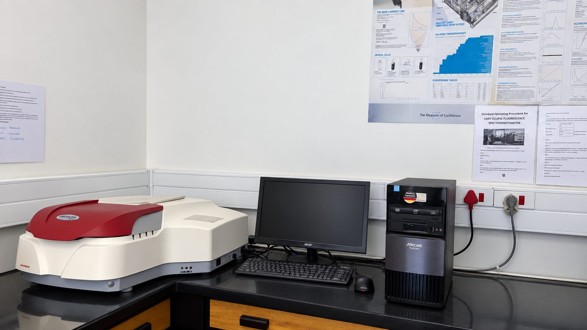

PRIMARY FOCUS
Product Development & Proof of Concept
We help transform scientific ideas, research outputs and early-stage concepts into validated, technically credible and commercially relevant solutions.
- Concept and proof-of-concept development
- Experimental design and validation
- Technical feasibility assessments
- Materials and process optimisation
- Laboratory-to-pilot scale-up support